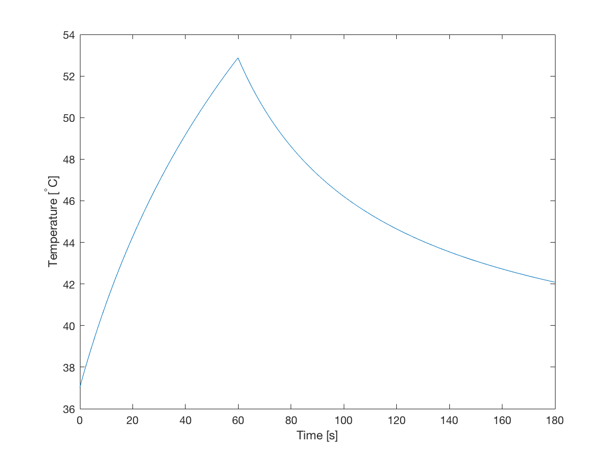

Using A Binary Sensor Mask
This example provides a simple demonstration of using k-Wave to model the diffusion of heat within a two-dimensional homogeneous medium with a constant source term (volume rate of heat deposition). It uses a binary source mask to extract the temperature time profile. It builds on the Heat Diffusion In A Homogeneous Medium and Constant Rate Of Heat Deposition examples.
Contents
Defining the sensor mask
In the Heat Diffusion In A Homogeneous Medium and Constant Rate Of Heat Deposition examples, the sensor input is given as an empty array [] (i.e., it's not defined), and only the temperature after calling the takeTimeStep method is accessed. It is also possible to define a binary sensor mask in the same way as the other simulation functions in k-Wave (see the Using A Binary Sensor Mask Example). This allows the time history of the temperature field to be recorded. The current sensor data can be queried using the property kdiff.sensor_data, where kdiff is the name of the kWaveDiffusion object. The sensor_data is stored using MATLAB's standard column-wise linear matrix index ordering, indexed as sensor_data(sensor_point_index, time_index). In this example, the sensor mask is defined with a single point in the centre of the grid.
% create binary sensor mask with a single sensor point in the % centre of the grid sensor.mask = zeros(Nx, Ny); sensor.mask(Nx/2, Ny/2) = 1; % create kWaveDiffusion object kdiff = kWaveDiffusion(kgrid, medium, source, sensor);
Turning the source on and off
The main advantage of defining kWaveDiffusion as a class, rather than a conventional MATLAB function, is that the simulation properties can be modified, and the simulation continued. In particular, the volume rate of heat deposition can be changed to model a heat source which changes over time. In this example, a Gaussian shaped heat source is used to heat the tissue for 60 seconds. The heat source is then switched off, and the tissue is allowed to cool for 120 seconds.
% set source on time and off time on_time = 60; % [s] off_time = 120; % [s] % set time step size dt = 0.1; % take time steps kdiff.takeTimeStep(round(on_time / dt), dt); % turn off heat source kdiff.Q = 0; % take time steps kdiff.takeTimeStep(round(off_time / dt), dt);
The temperature time curve at the sensor position in the centre of the grid is shown below. This shows a classic heating and cooling curve.
